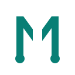
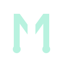
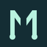
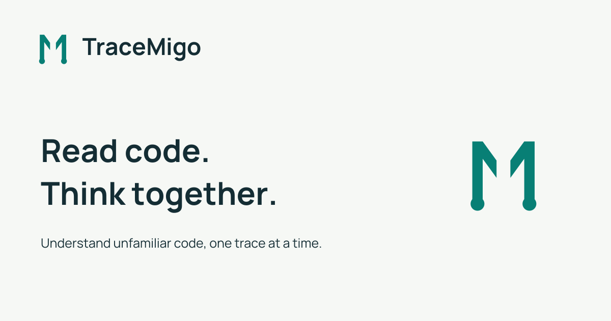

Angular paired paths, equal weight, exact colours and self-hosted Manrope. These controls demonstrate visual states only. Name/logo clearance and production acceptance remain pending.
Read code. Think together.
Font license · read_code()
Notice: explanation text and the labelled border carry meaning together.

Read code. Think together.
Font license · read_code()
Notice: explanation text and the labelled border carry meaning together.

#142D34#087F75#B8F2DF#F6F8F5#C64F34#FFFFFF

Review-only gallery. Not a public product page or working practice interface.